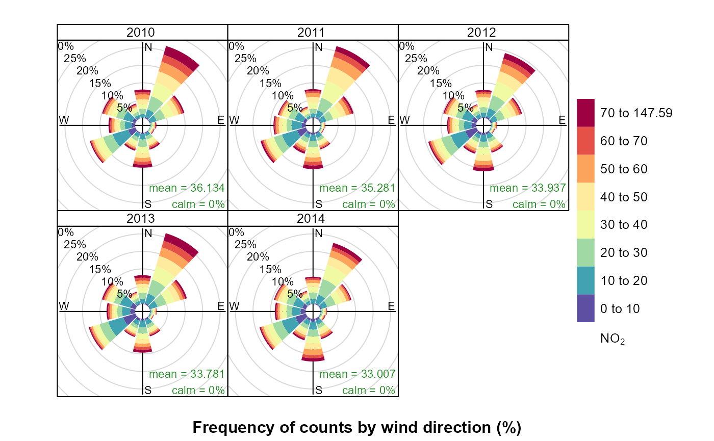

Einleitung
Dieses Dokument soll einem Anwender des Packages rOstluft::rOstluft einen Überblick der enthaltenen Funktionalität bieten und die gängigsten Arbeitsabläufe aufzeigen.
Der Fokus dieses Packages liegt in der Bereitstellung von Daten aus verschiedenen Datenquellen in einem einheitlichen Format zur Analyse der Luftqualität. Ausserdem enthält es Werkzeuge für einige übliche Aufgaben, die während solchen Analysen anfallen. Diese sind Umrechnungen zwischen verschiedenen Mittelungsintervallen, Statistische Methoden mit Berücksichtung der Datenverfügbarkeit, Umwandlung von Volumen- und Massenkonzentrationen und lesen von Daten vorliegend in verschiedenen Formaten.
Installation
Der Quellcode von rOstluft ist auf github gehosted. Die einfachste Variante ist die Installation mit Hilfe des Packages devtools:
#install.packages("devtools")
devtools::install_github("Ostluft/rOstluft")Zusätzlich muss das Package aws.s3 manuell aus dem cloudyr Repositorium installiert werden, weil die CRANR Version veraltet ist:
install.packages("aws.s3", repos = c("cloudyr" = "http://cloudyr.github.io/drat"))Ist dies wegen Einschränkungen durch Firewalls oder Proxies nicht möglich. Muss der Quellcode manuell von github heruntergeladen werden (Clone or download > Download as ZIP), entpackt und manuell installiert werden. Allerdings bestehen Abhängigkeiten zu Packages die auf CRAN bereitgestellt werden. Können auch keine CRAN Packages installiert werden, müssen zuerst alle CRAN Abhängkigkeiten und deren Abhängigkeiten installiert werden.
Zusätzlich besteht noch die Github Abhängkigkeit zu rOstluft.data. Dieses Packages muss auf die gleiche Weise zuerst installiert werden mit folgenden Schritten:
download.file("https://github.com/Ostluft/rOstluft/archive/master.zip", "rOstluft-master.zip")
download.file("https://github.com/Ostluft/rOstluft.data/archive/master.zip", "rOstluft.data-master.zip")
install.packages("devtools")
install.packages("aws.s3", repos = c("cloudyr" = "http://cloudyr.github.io/drat"))
deps <- c('dplyr', 'tidyr', 'lubridate', 'R6', 'rappdirs', 'tibble', 'base64url', 'forcats',
'fs', 'purrr', 'readr', 'stringr', 'plyr', 'stringi', 'sp', 'rgdal', 'rlang', 'magrittr')
for (p in deps) {
install.packages(p)
}
devtools::install_local("rOstluft.data-master.zip", dependencies = FALSE)
devtools::install_local("rOstluft-master.zip", dependencies = FALSE)Falls das installieren von rOstluft scheitert, fehlt vermutlich eine Abhängigkeit. Welche das ist, kann der Fehlermeldung entnommen werden.
Nach der Installation kann das Packages verwendet werden:
library(rOstluft)Abfrage von Daten
Ostluft Amazon AWS S3
Die zentrale Datenablage innerhalb von Ostluft erfolgt auf Amazon AWS S3.Aus Lizenztechnischen Gründen kann das Bucket nicht öffentlich zugänglich gemacht werden. Die Zugangsdaten werden von Jörg Sintermann vergeben. Die Zugangsdaten werden am einfachsten über eine .Renvirion Datei im Verzeichnis des RStudio Projektes oder im HOME Verzeichnis des Users1 dem Package zugänglich gemacht. Inhalt der .Renvirion Datei:
AWS_ACCESS_KEY_ID = "XXXXXXXXXXXXXXXXXXXX"
AWS_SECRET_ACCESS_KEY = "XXXXXXXXXXXXXXXXXXXXXXXXXXXXXXXXXXXXXXXX"
AWS_DEFAULT_REGION = "eu-central-1"Weitere Möglichkeiten sind in der Dokumentation von aws.signature zu finden.
Sämtliche Daten die einmal von Amazon S3 geöffnet wurden, werden lokal auf dem Rechner gespeichert. Bei jedem folgenden Zugriff wird nur überprüft, ob die Daten noch identisch sind.
Der Zugriff auf die Daten erfügt dann über ein store Objekt, welches auf folgende Art initialisiert wird:
store <- storage_s3_rds("tutorial", format = format_rolf(), bucket = "rostluft", prefix = "aqmet")TODO: Beschreibung was die verschiedenen Argument bedeuten
Dieses store Objekt verfügt über verschiedene Methoden, zur Abfrage von Daten sind jedoch nur zwei von Bedeutung:
-
$get_content(): holt eine Übersicht über alle im store enthaltene Daten -
$get(): Aktuelle Datenabfrage. Welche Daten geholt werden, muss über Funktionsargumente definiert werden
content <- store$get_content()
content
#> # A tibble: 146,220 x 6
#> year interval site parameter unit n
#> <dbl> <fct> <fct> <fct> <fct> <int>
#> 1 2004 h8gl Rap_Tüchelweier CO mg/m3 15
#> 2 2004 h8gl Rap_Tüchelweier O3 µg/m3 15
#> 3 2004 h1 Rap_Tüchelweier CO mg/m3 20
#> 4 2004 h1 Rap_Tüchelweier Hr %Hr 19
#> 5 2004 h1 Rap_Tüchelweier NO2 µg/m3 20
#> 6 2004 h1 Rap_Tüchelweier NO µg/m3 20
#> 7 2004 h1 Rap_Tüchelweier NOx ppb 20
#> 8 2004 h1 Rap_Tüchelweier O3 µg/m3 20
#> 9 2004 h1 Rap_Tüchelweier T °C 19
#> 10 2004 h1 Rap_Tüchelweier WD ° 18
#> # ... with 146,210 more rows
dplyr::sample_n(content, 10)
#> # A tibble: 10 x 6
#> year interval site parameter unit n
#> <dbl> <fct> <fct> <fct> <fct> <int>
#> 1 2014 d1 St.Gallen WVv m/s 365
#> 2 1992 d1 Bac_Turm O3 µg/m3 334
#> 3 1992 y1 StG_Stuelegg O3_nb_h1>200 1 1
#> 4 2008 min10 ETHZ_CHN-Gebäude Hr % 44051
#> 5 2019 d1 Altenrhein p hPa 90
#> 6 2005 y1 Wal_Dietlikonerstrasse PM10_95%_min30 µg/m3 1
#> 7 1991 d1 Vad_Mühleholz Hr_nb_min30 1 181
#> 8 2011 h1 Zch_Schimmelstrasse NO µg/m3 8661
#> 9 2014 d1 Gla_Feuerwehrstützpunkt O3_nb_min30 1 362
#> 10 1992 m1 Fra_Bahnhofstrasse T_min_min30 °C 11Eine Datenabfrage holt immer die Daten von einem komplettem Jahr einer Station für einen bestimmten Mittelungszeitraum:
store$get(site = "Zch_Schimmelstrasse", year = 2014, interval = "min30")
#> # A tibble: 243,875 x 6
#> starttime site parameter interval unit value
#> <dttm> <fct> <fct> <fct> <fct> <dbl>
#> 1 2014-01-01 00:00:00 Zch_Schimmelstras~ CO min30 ppm 6.37e-1
#> 2 2014-01-01 00:00:00 Zch_Schimmelstras~ Hr min30 %Hr 8.74e+1
#> 3 2014-01-01 00:00:00 Zch_Schimmelstras~ NO2 min30 ppb 2.81e+1
#> 4 2014-01-01 00:00:00 Zch_Schimmelstras~ NO min30 ppb 6.15e+1
#> 5 2014-01-01 00:00:00 Zch_Schimmelstras~ NOx min30 ppb 8.96e+1
#> 6 2014-01-01 00:00:00 Zch_Schimmelstras~ O3 min30 ppb 7.98e-1
#> 7 2014-01-01 00:00:00 Zch_Schimmelstras~ PM10 min30 µg/m3 1.02e+2
#> 8 2014-01-01 00:00:00 Zch_Schimmelstras~ PN min30 1/cm3 2.60e+4
#> 9 2014-01-01 00:00:00 Zch_Schimmelstras~ RainDur min30 min 0.
#> 10 2014-01-01 00:00:00 Zch_Schimmelstras~ SO2 min30 ppb 2.12e+0
#> # ... with 243,865 more rowsJedes der Argumente kann auch ein Vector sein mit mehreren Werte. Es wird dann Kombination aller Möglichkeiten abgefragt.
sites <- c("Zch_Schimmelstrasse", "Zch_Rosengartenstrasse", "Zch_Stampfenbachstrasse")
data <- store$get(site = sites, year = 2014:2015, interval = "min30")
data
#> # A tibble: 1,287,367 x 6
#> starttime site parameter interval unit value
#> <dttm> <fct> <fct> <fct> <fct> <dbl>
#> 1 2014-01-01 00:00:00 Zch_Rosengartenst~ Hr min30 %Hr 92.7
#> 2 2014-01-01 00:00:00 Zch_Rosengartenst~ NO2 min30 ppb 18.6
#> 3 2014-01-01 00:00:00 Zch_Rosengartenst~ NO min30 ppb 42.8
#> 4 2014-01-01 00:00:00 Zch_Rosengartenst~ NOx min30 ppb 61.4
#> 5 2014-01-01 00:00:00 Zch_Rosengartenst~ O3 min30 ppb 0.776
#> 6 2014-01-01 00:00:00 Zch_Rosengartenst~ PM10 min30 µg/m3 298.
#> 7 2014-01-01 00:00:00 Zch_Rosengartenst~ RainDur min30 min 0
#> 8 2014-01-01 00:00:00 Zch_Rosengartenst~ T min30 °C -2.18
#> 9 2014-01-01 00:00:00 Zch_Rosengartenst~ p min30 hPa 966.
#> 10 2014-01-01 00:30:00 Zch_Rosengartenst~ Hr min30 %Hr 89.1
#> # ... with 1,287,357 more rows
dplyr::sample_n(data, 10)
#> # A tibble: 10 x 6
#> starttime site parameter interval unit value
#> <dttm> <fct> <fct> <fct> <fct> <dbl>
#> 1 2015-05-03 21:00:00 Zch_Stampfenbachst~ NO min30 ppb 11.2
#> 2 2015-06-06 11:30:00 Zch_Rosengartenstr~ T min30 °C 27.4
#> 3 2014-04-14 05:30:00 Zch_Rosengartenstr~ T min30 °C 8.45
#> 4 2014-04-29 15:00:00 Zch_Schimmelstrasse p min30 hPa 965.
#> 5 2014-10-04 02:30:00 Zch_Schimmelstrasse SO2 min30 ppb 0.464
#> 6 2015-07-30 10:30:00 Zch_Rosengartenstr~ NOx min30 ppb 26.5
#> 7 2014-10-06 10:00:00 Zch_Schimmelstrasse p min30 hPa 966.
#> 8 2014-07-11 07:00:00 Zch_Rosengartenstr~ Hr min30 %Hr 89.5
#> 9 2014-09-07 22:00:00 Zch_Schimmelstrasse RainDur min30 min 0
#> 10 2015-11-14 21:30:00 Zch_Stampfenbachst~ WVv min30 m/s 1.08Die letzte Funktionalität von $get() ist die Filterung der Daten vor der Rückgabe. Mit dem Argument “filter” als dplyr::filter() kompatibler Ausdruck:
store$get(site = sites, year = 2014, interval = "min30", filter = parameter == "PM10")
#> # A tibble: 51,319 x 6
#> starttime site parameter interval unit value
#> <dttm> <fct> <fct> <fct> <fct> <dbl>
#> 1 2014-01-01 00:00:00 Zch_Rosengartenstras~ PM10 min30 µg/m3 298.
#> 2 2014-01-01 00:30:00 Zch_Rosengartenstras~ PM10 min30 µg/m3 557.
#> 3 2014-01-01 01:00:00 Zch_Rosengartenstras~ PM10 min30 µg/m3 308.
#> 4 2014-01-01 01:30:00 Zch_Rosengartenstras~ PM10 min30 µg/m3 169.
#> 5 2014-01-01 02:00:00 Zch_Rosengartenstras~ PM10 min30 µg/m3 128.
#> 6 2014-01-01 02:30:00 Zch_Rosengartenstras~ PM10 min30 µg/m3 82.9
#> 7 2014-01-01 03:00:00 Zch_Rosengartenstras~ PM10 min30 µg/m3 38.3
#> 8 2014-01-01 03:30:00 Zch_Rosengartenstras~ PM10 min30 µg/m3 32.6
#> 9 2014-01-01 04:00:00 Zch_Rosengartenstras~ PM10 min30 µg/m3 32.4
#> 10 2014-01-01 04:30:00 Zch_Rosengartenstras~ PM10 min30 µg/m3 31.7
#> # ... with 51,309 more rowsLokales Arbeiten mit den AWS S3 Daten
Ein Nachteil des S3 Storage ist, dass bei jeder Datenabfrage eine Internetverbindung zur Überprüfung ob aktualisierte Daten verfügbar sind vorhanden sein muss. Selbst wenn die Daten bereits lokal gespeichert sind. Nicht nur wird eine Internetverbindung benötigt, die Überprüfung braucht auch eine kurze Zeit. Hat man alle notwendigen Daten bereits herunter geladen, kann man jedoch mit einem lokalen Store arbeiten. Praktischerweise hat der S3 Store eine Funktion, welche einen lokalen Store zurückgibt.
lokal <- store$get_local_storage()Dieser verfügt über die gleichen Funktionalität wie der S3 Store:
lokal$get_content()
#> # A tibble: 146,220 x 6
#> year interval site parameter unit n
#> <dbl> <fct> <fct> <fct> <fct> <int>
#> 1 2004 h8gl Rap_Tüchelweier CO mg/m3 15
#> 2 2004 h8gl Rap_Tüchelweier O3 µg/m3 15
#> 3 2004 h1 Rap_Tüchelweier CO mg/m3 20
#> 4 2004 h1 Rap_Tüchelweier Hr %Hr 19
#> 5 2004 h1 Rap_Tüchelweier NO2 µg/m3 20
#> 6 2004 h1 Rap_Tüchelweier NO µg/m3 20
#> 7 2004 h1 Rap_Tüchelweier NOx ppb 20
#> 8 2004 h1 Rap_Tüchelweier O3 µg/m3 20
#> 9 2004 h1 Rap_Tüchelweier T °C 19
#> 10 2004 h1 Rap_Tüchelweier WD ° 18
#> # ... with 146,210 more rows
lokal$get(site = sites, year = 2014, interval = "min30", filter = parameter == "PM10")
#> # A tibble: 51,319 x 6
#> starttime site parameter interval unit value
#> <dttm> <fct> <fct> <fct> <fct> <dbl>
#> 1 2014-01-01 00:00:00 Zch_Rosengartenstras~ PM10 min30 µg/m3 298.
#> 2 2014-01-01 00:30:00 Zch_Rosengartenstras~ PM10 min30 µg/m3 557.
#> 3 2014-01-01 01:00:00 Zch_Rosengartenstras~ PM10 min30 µg/m3 308.
#> 4 2014-01-01 01:30:00 Zch_Rosengartenstras~ PM10 min30 µg/m3 169.
#> 5 2014-01-01 02:00:00 Zch_Rosengartenstras~ PM10 min30 µg/m3 128.
#> 6 2014-01-01 02:30:00 Zch_Rosengartenstras~ PM10 min30 µg/m3 82.9
#> 7 2014-01-01 03:00:00 Zch_Rosengartenstras~ PM10 min30 µg/m3 38.3
#> 8 2014-01-01 03:30:00 Zch_Rosengartenstras~ PM10 min30 µg/m3 32.6
#> 9 2014-01-01 04:00:00 Zch_Rosengartenstras~ PM10 min30 µg/m3 32.4
#> 10 2014-01-01 04:30:00 Zch_Rosengartenstras~ PM10 min30 µg/m3 31.7
#> # ... with 51,309 more rowsDem aufmerksamen Leser ist vermutlich aufgefallen, dass die Inhaltsübersicht von $get_content() nicht dem lokalen Inhalt entspricht. Es ist immer noch die Übersicht welche Daten in S3 verfügbar wären. Will man wissen welche Daten lokal verfügbar sind, hilft einem die Funktion $list_chunks() weiter.
tibble::glimpse(lokal$list_chunks())
#> Observations: 7
#> Variables: 7
#> $ chunk_name <chr> "h1/aDHCu1pIX0thc2VybmVfaHlzcGxpdMK7Mj...
#> $ interval <chr> "h1", "min30", "min30", "min30", "min3...
#> $ site <chr> "ZH_Kaserne_hysplit", "Zch_Rosengarten...
#> $ year <chr> "2018", "2014", "2015", "2014", "2015"...
#> $ local.path <fs::path> "C:/Users/vot/AppData/Local/rOstl...
#> $ local.modification_time <dttm> 2019-04-02 16:50:54, 2019-04-02 17:08...
#> $ local.size <fs::bytes> 3.03K, 662.57K, 780.05K, 1.07M, ...Auch der S3 Store verfügt über die $list_chunks() Funktion.
tibble::glimpse(store$list_chunks())
#> Observations: 7,257
#> Variables: 11
#> $ chunk_name <chr> "d1/ZDHCu01hdV9Qw7xudMK7MTk5MA", "d1/Z...
#> $ interval <chr> "d1", "d1", "d1", "d1", "d1", "d1", "d...
#> $ site <chr> "Mau_Pünt", "Mau_Pünt", "Mau_Pünt", "M...
#> $ year <chr> "1990", "1991", "1992", "1993", "1994"...
#> $ s3.key <chr> "aqmet/data/d1/ZDHCu01hdV9Qw7xudMK7MTk...
#> $ s3.lastmodified <chr> "2019-03-30T15:17:31.000Z", "2019-03-3...
#> $ s3.etag <chr> "cb52efc18f4157a6c6cb508f5d116922", "2...
#> $ s3.size <fs::bytes> 15.7K, 27.02K, 29.17K, 28.24K, 1...
#> $ local.path <fs::path> NA, NA, NA, NA, NA, NA, NA, NA, N...
#> $ local.modification_time <dttm> NA, NA, NA, NA, NA, NA, NA, NA, NA, N...
#> $ local.size <fs::bytes> NA, NA, NA, NA, NA, NA, NA, NA, ...Im normal Fall ist Nutzung von $get_content() über $list_chunks() zu bevorzugen. Die Rückgabe von $get_content() enthält die gemessen Parameter und die Anzahl der gültigen Punkte. Bei $list_chunks() hingegen sind einige interne Informationen über den Store enthalten.
Um die Vorbereitung um mit einem lokalen Store zu arbeiten zu vereinfachen verfügt der S3 Store über die Funktion $download(...). Die dot Argumente werden als Filter auf die Rückgabe von $list_chunks() angewendet. Ohne Argumente wird der komplette Store heruntergeladen. Folgendes Beispiel lädt samtliche 30 Minutenmittelwerte für die Station Rosengartenstrasse nach dem Jahr 2015 (Achtung == verwenden, es sind Filter Ausdrücke!):
store$download(site == "Zch_Rosengartenstrasse", interval == "min30", year > 2015)
#> list()
lokal$list_chunks() %>% dplyr::select("site", "year", "interval")
#> # A tibble: 10 x 3
#> site year interval
#> <chr> <chr> <chr>
#> 1 ZH_Kaserne_hysplit 2018 h1
#> 2 Zch_Rosengartenstrasse 2017 min30
#> 3 Zch_Rosengartenstrasse 2018 min30
#> 4 Zch_Rosengartenstrasse 2014 min30
#> 5 Zch_Rosengartenstrasse 2015 min30
#> 6 Zch_Rosengartenstrasse 2016 min30
#> 7 Zch_Stampfenbachstrasse 2014 min30
#> 8 Zch_Stampfenbachstrasse 2015 min30
#> 9 Zch_Schimmelstrasse 2014 min30
#> 10 Zch_Schimmelstrasse 2015 min30Eigene Daten in einem lokalen Store
Der aqmet S3 Store enthält nur bereinigte Daten von abgeschlossenen Jahren. Werden Daten benötigt, die nicht in S3 vorhanden sind, bietet sich die Nutzung eines seperaten lokalen Stores an:
my_store = storage_local_rds("eigene_daten", format_rolf(), read.only = FALSE)
#> Local store eigene_daten initialized under 'C:\Users\vot\AppData\Local\rOstluft\eigene_daten'In diesen kann man nun Daten mit der Store Funktion $put() oder der Hilfsfunktion import_directory() importieren:
examples_path <- system.file("extdata", package = "rOstluft.data")
import_directory(my_store, examples_path, read_airmo_csv, glob = "*Jan.csv")
#> Importing 'C:/Users/vot/Documents/R/win-library/3.5/rOstluft.data/extdata/Zch_Stampfenbachstrasse_d1_2013_Jan.csv' with size 25.5K. File 1 of 3
#> Read 'C:/Users/vot/Documents/R/win-library/3.5/rOstluft.data/extdata/Zch_Stampfenbachstrasse_d1_2013_Jan.csv' in 0.20 seconds. Got 2170 data points
#> Put data into store eigene_daten in 0.03 seconds
#> Importing 'C:/Users/vot/Documents/R/win-library/3.5/rOstluft.data/extdata/Zch_Stampfenbachstrasse_h1_2013_Jan.csv' with size 143K. File 2 of 3
#> Read 'C:/Users/vot/Documents/R/win-library/3.5/rOstluft.data/extdata/Zch_Stampfenbachstrasse_h1_2013_Jan.csv' in 0.03 seconds. Got 14116 data points
#> Put data into store eigene_daten in 0.07 seconds
#> Importing 'C:/Users/vot/Documents/R/win-library/3.5/rOstluft.data/extdata/Zch_Stampfenbachstrasse_min30_2013_Jan.csv' with size 259K. File 3 of 3
#> Read 'C:/Users/vot/Documents/R/win-library/3.5/rOstluft.data/extdata/Zch_Stampfenbachstrasse_min30_2013_Jan.csv' in 0.04 seconds. Got 28234 data points
#> Put data into store eigene_daten in 0.08 seconds
#> Finished import after 0.46 seconds
fn <- fs::path(examples_path, "Zch_Rosengartenstrasse_2010-2014.csv")
data <- read_airmo_csv(fn)
my_store$put(data)
#> # A tibble: 18 x 6
#> year interval site parameter unit n
#> <dbl> <fct> <fct> <fct> <fct> <int>
#> 1 2013 min30 Zch_Rosengartenstrasse NO µg/m3 4269
#> 2 2013 min30 Zch_Rosengartenstrasse NO2 µg/m3 4269
#> 3 2013 min30 Zch_Rosengartenstrasse NOx ppb 4269
#> 4 2013 min30 Zch_Rosengartenstrasse O3 µg/m3 4277
#> 5 2013 min30 Zch_Rosengartenstrasse PM10 µg/m3 4025
#> 6 2013 min30 Zch_Rosengartenstrasse Hr %Hr 4010
#> 7 2013 min30 Zch_Rosengartenstrasse p hPa 4291
#> 8 2013 min30 Zch_Rosengartenstrasse RainDur min 4291
#> 9 2013 min30 Zch_Rosengartenstrasse T °C 4010
#> 10 2014 min30 Zch_Rosengartenstrasse NO µg/m3 17415
#> 11 2014 min30 Zch_Rosengartenstrasse NO2 µg/m3 17415
#> 12 2014 min30 Zch_Rosengartenstrasse NOx ppb 17415
#> 13 2014 min30 Zch_Rosengartenstrasse O3 µg/m3 17366
#> 14 2014 min30 Zch_Rosengartenstrasse PM10 µg/m3 16788
#> 15 2014 min30 Zch_Rosengartenstrasse Hr %Hr 17517
#> 16 2014 min30 Zch_Rosengartenstrasse p hPa 17519
#> 17 2014 min30 Zch_Rosengartenstrasse RainDur min 17519
#> 18 2014 min30 Zch_Rosengartenstrasse T °C 17517Wie gewohnt kann erhält man mit $get_content() eine Übersicht und die Daten mit $get():
my_store$get_content()
#> # A tibble: 126 x 6
#> year interval site parameter unit n
#> <dbl> <fct> <fct> <fct> <fct> <int>
#> 1 2014 min30 Zch_Rosengartenstrasse NO µg/m3 17415
#> 2 2014 min30 Zch_Rosengartenstrasse NO2 µg/m3 17415
#> 3 2014 min30 Zch_Rosengartenstrasse NOx ppb 17415
#> 4 2014 min30 Zch_Rosengartenstrasse O3 µg/m3 17366
#> 5 2014 min30 Zch_Rosengartenstrasse PM10 µg/m3 16788
#> 6 2014 min30 Zch_Rosengartenstrasse Hr %Hr 17517
#> 7 2014 min30 Zch_Rosengartenstrasse p hPa 17519
#> 8 2014 min30 Zch_Rosengartenstrasse RainDur min 17519
#> 9 2014 min30 Zch_Rosengartenstrasse T °C 17517
#> 10 2013 min30 Zch_Rosengartenstrasse NO µg/m3 4269
#> # ... with 116 more rows
my_store$get(site = "Zch_Stampfenbachstrasse", interval = c("d1", "h1"), year = 2013) %>%
dplyr::arrange(.data$starttime, .data$parameter)
#> # A tibble: 16,286 x 6
#> starttime site parameter interval unit value
#> <dttm> <fct> <fct> <fct> <fct> <dbl>
#> 1 2013-01-01 00:00:00 Zch_Stampfenbachs~ CO d1 mg/m3 0.381
#> 2 2013-01-01 00:00:00 Zch_Stampfenbachs~ CO d1 ppm 0.327
#> 3 2013-01-01 00:00:00 Zch_Stampfenbachs~ CO h1 mg/m3 0.805
#> 4 2013-01-01 00:00:00 Zch_Stampfenbachs~ CO h1 ppm 0.692
#> 5 2013-01-01 00:00:00 Zch_Stampfenbachs~ CO_max_min~ d1 mg/m3 0.966
#> 6 2013-01-01 00:00:00 Zch_Stampfenbachs~ CO_min_min~ d1 mg/m3 0.190
#> 7 2013-01-01 00:00:00 Zch_Stampfenbachs~ CO_nb_min30 d1 1 48
#> 8 2013-01-01 00:00:00 Zch_Stampfenbachs~ Hr d1 %Hr 76.0
#> 9 2013-01-01 00:00:00 Zch_Stampfenbachs~ Hr h1 %Hr 82.9
#> 10 2013-01-01 00:00:00 Zch_Stampfenbachs~ Hr_max_min~ d1 %Hr 88.4
#> # ... with 16,276 more rowsEinlesefunktionen von Daten
Um Daten in R einzulesen exisitieren für folgende Quellen bereits Funktionen:
- Ostluft:
read_airmo_csv()undread_airmo_dat()für Exporte aus der AIRMO - MeteoSchweiz:
read_smn()undread_smn_multiple()für SwissMetNet Exporte - ETHZ/IAC:
read_ethz_iac()Meteo Stationen auf dem Hönggerberg und dem Hauptgebäude CHN
Existiert für die vorliegenden Daten keine Funktion und man möchte die selber schreiben an dieser Stelle einige Hinweise und Tipps.
Verwende readr Funktionen und definiere die Zeichenkodierung
Ein generelles Problem beim einlesen von Textdateien ist die Zeichenkodierung. Die meisten haben vermutlich “�” schon in Texten gesehen. Alle Daten im aqmet Store und alle Rückgabewerte von read_xxx() Funktionen sind UTF-8 kodiert. Mit dem readr Packages wird bei korrekter Definition der Locale der Text automatisch zu UTF-8 konvertiert. Im Gegensatz zu den R Base Funktionen oder data.table::fread().
Ausgabeformat rolf
Für ein reibungsloses Zusammenspiel mit den Stores zu garantieren muss das Format rolf eingehalten werden. rolf setzt einen tibble mit folgenden Spalten und Klassen voraus:
| Spalte | Klasse |
|---|---|
| “starttime” | POSIXct |
| “site” | factor |
| “parameter” | factor |
| “interval” | factor |
| “unit” | factor |
| “value” | double |
Selbst wenn in der Datei keine Einheiten enthalten sind, ist es besser die Spalte unit mit NA zu initialisieren. Ein weiterer Trick ist es die Spalten am Ende explizit zu selektionieren. Hier ein Beispiel, wie es in read_smn() gelöst ist:
data <- dplyr::mutate(data,
stn = forcats::as_factor(.data$stn),
parameter = forcats::as_factor(.data$parameter),
interval = forcats::as_factor(interval),
unit = factor(NA)
)
dplyr::select(data, starttime = "time", site = "stn", "parameter", "interval", "unit", "value")Mit dem dplyr::select am Ende ist man sicher nur die Spalten in der Rückgabe zu haben die man haben will und es ist einfach noch Spalten umzubenennen und die Reihenfolge zu ändern.
Zusammenfügen von Daten im rolf Format
Die Verwendung von Factoren im rolf Format hat seine Vor- und Nachteile. Der Hauptvorteil liegt bei schnelleren Lese- und Schreiboperation, der grösste Nachteil beim Zusammenfügen der Daten. dplyr::bind_rows wird die Factoren in Characters umwandeln, wenn unterschiedliche Levels in den Daten vorhanden sind. Die Funktion bind_rows_with_factor_columns() führt das Zusammenfügen korrekt aus. Sie unterstützt ausserdem Quasiquotation von rlang2. Somit kann auch eine grosse Liste von tibbles im rolf Format komfortable aneinander gefügt werden:
df1 <- read_airmo_csv(fs::path(examples_path, "Zch_Stampfenbachstrasse_h1_2013_Jan.csv"))
df2 <- read_airmo_csv(fs::path(examples_path, "Zch_Stampfenbachstrasse_d1_2013_Jan.csv"))
df_comb <- bind_rows_with_factor_columns(df1, df2)
df_comb %>% dplyr::arrange(.data$starttime, .data$parameter)
#> # A tibble: 16,286 x 6
#> starttime site parameter interval unit value
#> <dttm> <fct> <fct> <fct> <fct> <dbl>
#> 1 2013-01-01 00:00:00 Zch_Stampfenbachstr~ CO h1 mg/m3 0.805
#> 2 2013-01-01 00:00:00 Zch_Stampfenbachstr~ CO h1 ppm 0.692
#> 3 2013-01-01 00:00:00 Zch_Stampfenbachstr~ CO d1 mg/m3 0.381
#> 4 2013-01-01 00:00:00 Zch_Stampfenbachstr~ CO d1 ppm 0.327
#> 5 2013-01-01 00:00:00 Zch_Stampfenbachstr~ Hr h1 %Hr 82.9
#> 6 2013-01-01 00:00:00 Zch_Stampfenbachstr~ Hr d1 %Hr 76.0
#> 7 2013-01-01 00:00:00 Zch_Stampfenbachstr~ NO h1 µg/m3 80.5
#> 8 2013-01-01 00:00:00 Zch_Stampfenbachstr~ NO h1 ppb 64.6
#> 9 2013-01-01 00:00:00 Zch_Stampfenbachstr~ NO d1 µg/m3 17.6
#> 10 2013-01-01 00:00:00 Zch_Stampfenbachstr~ NO d1 ppb 14.1
#> # ... with 16,276 more rows
# liste mit 20+ tibbles
df_list <- read_smn_multiple(fs::path(examples_path, "smn_multi.txt"), as_list = TRUE)
length(df_list)
#> [1] 26
df_comb <- bind_rows_with_factor_columns(!!!df_list)
df_comb %>% dplyr::arrange(.data$starttime, .data$parameter)
#> # A tibble: 1,070 x 6
#> starttime site parameter interval unit value
#> <dttm> <fct> <fct> <fct> <fct> <dbl>
#> 1 2010-01-01 00:00:00 KLO dkl010b0 h1 <NA> 319
#> 2 2010-01-01 00:00:00 KLO fkl010b0 h1 <NA> 1.5
#> 3 2010-01-01 00:00:00 KLO gre000b0 h1 <NA> 0
#> 4 2010-01-01 00:00:00 KLO tre200b0 h1 <NA> 2.3
#> 5 2010-01-01 00:00:00 UEB dk1towb0 h1 <NA> 249
#> 6 2010-01-01 00:00:00 UEB fk1towb0 h1 <NA> 1.7
#> 7 2010-01-01 00:00:00 UEB ta1towb0 h1 <NA> 3.7
#> 8 2010-01-01 01:00:00 KLO dkl010b0 h1 <NA> 317
#> 9 2010-01-01 01:00:00 KLO fkl010b0 h1 <NA> 1.7
#> 10 2010-01-01 01:00:00 KLO gre000b0 h1 <NA> 0
#> # ... with 1,060 more rowsbind_rows_with_factor_columns() entfernt jedoch keine Duplikate aus den Daten. Es hängt die Daten einfach aneinander. Möchte man Duplikate entfernen, bzw. Daten aktualisieren mit neueren Daten muss man die Funktion $merge() des Format Objekts benützen. Dieses wurde beim Erzeugen des Store direkt initialisiert und ist als Feld $format verfügbar. Alternativ kann ein seperates Format Objekt erzeugt werden. Die Daten im ersten Datenframe werden über Daten im zweiten Datenframe priorisiert.
# kopiere Daten und setze einige NA -> Resultat sollte NA enthalten
df1 <- df2
df1$value[1:150] <- NA
df_comb <- store$format$merge(df1, df2)
df_comb %>% dplyr::arrange(.data$starttime, .data$parameter)
#> # A tibble: 2,170 x 6
#> starttime site parameter interval unit value
#> <dttm> <fct> <fct> <fct> <fct> <dbl>
#> 1 2013-01-01 00:00:00 Zch_Stampfenbachst~ CO d1 mg/m3 NA
#> 2 2013-01-01 00:00:00 Zch_Stampfenbachst~ CO d1 ppm NA
#> 3 2013-01-01 00:00:00 Zch_Stampfenbachst~ CO_max_min~ d1 mg/m3 NA
#> 4 2013-01-01 00:00:00 Zch_Stampfenbachst~ CO_min_min~ d1 mg/m3 NA
#> 5 2013-01-01 00:00:00 Zch_Stampfenbachst~ CO_nb_min30 d1 1 NA
#> 6 2013-01-01 00:00:00 Zch_Stampfenbachst~ Hr d1 %Hr 76.0
#> 7 2013-01-01 00:00:00 Zch_Stampfenbachst~ Hr_max_min~ d1 %Hr 88.4
#> 8 2013-01-01 00:00:00 Zch_Stampfenbachst~ Hr_min_min~ d1 %Hr 50.3
#> 9 2013-01-01 00:00:00 Zch_Stampfenbachst~ Hr_nb_min30 d1 1 48
#> 10 2013-01-01 00:00:00 Zch_Stampfenbachst~ NO d1 µg/m3 17.6
#> # ... with 2,160 more rows
rolf <- format_rolf()
df_comb <- rolf$merge(df1, df2)
df_comb %>% dplyr::arrange(.data$starttime, .data$parameter)
#> # A tibble: 2,170 x 6
#> starttime site parameter interval unit value
#> <dttm> <fct> <fct> <fct> <fct> <dbl>
#> 1 2013-01-01 00:00:00 Zch_Stampfenbachst~ CO d1 mg/m3 NA
#> 2 2013-01-01 00:00:00 Zch_Stampfenbachst~ CO d1 ppm NA
#> 3 2013-01-01 00:00:00 Zch_Stampfenbachst~ CO_max_min~ d1 mg/m3 NA
#> 4 2013-01-01 00:00:00 Zch_Stampfenbachst~ CO_min_min~ d1 mg/m3 NA
#> 5 2013-01-01 00:00:00 Zch_Stampfenbachst~ CO_nb_min30 d1 1 NA
#> 6 2013-01-01 00:00:00 Zch_Stampfenbachst~ Hr d1 %Hr 76.0
#> 7 2013-01-01 00:00:00 Zch_Stampfenbachst~ Hr_max_min~ d1 %Hr 88.4
#> 8 2013-01-01 00:00:00 Zch_Stampfenbachst~ Hr_min_min~ d1 %Hr 50.3
#> 9 2013-01-01 00:00:00 Zch_Stampfenbachst~ Hr_nb_min30 d1 1 48
#> 10 2013-01-01 00:00:00 Zch_Stampfenbachst~ NO d1 µg/m3 17.6
#> # ... with 2,160 more rowsDie $merge() Funktion unterstützt nur 2 Argumente. Muss eine Liste von tibbles gemerget werden muss man purrr::reduce() benützen. Mit Hilfe des Argument .dir kann man die Priosierung setzen. Mit “forward”" haben die Daten die zuerst in der Liste auftauchen Priorität, mit “backward” die Letzten.
df_comb <- purrr::reduce(df_list, rolf$merge, .dir = "forward")
df_comb %>% dplyr::arrange(.data$starttime, .data$parameter)
#> # A tibble: 1,070 x 6
#> starttime site parameter interval unit value
#> <dttm> <fct> <fct> <fct> <fct> <dbl>
#> 1 2010-01-01 00:00:00 KLO dkl010b0 h1 <NA> 319
#> 2 2010-01-01 00:00:00 KLO fkl010b0 h1 <NA> 1.5
#> 3 2010-01-01 00:00:00 KLO gre000b0 h1 <NA> 0
#> 4 2010-01-01 00:00:00 KLO tre200b0 h1 <NA> 2.3
#> 5 2010-01-01 00:00:00 UEB dk1towb0 h1 <NA> 249
#> 6 2010-01-01 00:00:00 UEB fk1towb0 h1 <NA> 1.7
#> 7 2010-01-01 00:00:00 UEB ta1towb0 h1 <NA> 3.7
#> 8 2010-01-01 01:00:00 KLO dkl010b0 h1 <NA> 317
#> 9 2010-01-01 01:00:00 KLO fkl010b0 h1 <NA> 1.7
#> 10 2010-01-01 01:00:00 KLO gre000b0 h1 <NA> 0
#> # ... with 1,060 more rowsMetadaten
Daten aus verschiedenen Quellen werden verschiedene Schemen für die Vergabe von Namen haben. MeteoSchweiz zum Beispiel kodiert im Parameter Namen gleichzeitig das Mittelungsinterval:
| Parameter | Interval | Messgrösse |
|---|---|---|
| ta1towb0 | Bürgerliche Stundenmittel | Lufttemperatur, Instrument 1 |
| ta1towh0 | Stundenmittel | Lufttemperatur, Instrument 1 |
| ta1tows0 | Momentanwerte | Lufttemperatur, Instrument 1 |
| fk1towz0 | Zehnminutenmittel | Windgeschwindigkeit skalar, Instrument 1 |
Um die Bezeichnungen zu normalisieren kommt es zu einem Zusammenspiel von im Store bereitgestellte Daten und der Funktion meta_apply(). Das Store Objekt verfügt über die Funktion $get_meta(), welche im AWS S3 bereitgestellte Metadaten zurück gibt. Wird $get_meta() ohne Argument aufgerufen erhält man eine Liste mit sämtlichen Metadaten im Store. Kennt man bereits den Namen kann man direkt die entsprechenden Metadaten holen:
meta <- store$get_meta()
names(meta)
#> [1] "all" "ecmwf" "ethz" "hysplit"
#> [5] "meteoschweiz" "meteotest" "nabel" "ostluft"
meteoschweiz <- store$get_meta("meteoschweiz")
tibble::glimpse(meteoschweiz)
#> List of 1
#> $ meteoschweiz:Classes 'tbl_df', 'tbl' and 'data.frame': 261 obs. of 15 variables:
#> ..$ site_short : chr [1:261] "TAE" "TAE" "TAE" "TAE" ...
#> ..$ site : chr [1:261] "Aadorf/Tänikon" "Aadorf/Tänikon" "Aadorf/Tänikon" "Aadorf/Tänikon" ...
#> ..$ Länge : chr [1:261] "8°54'" "8°54'" "8°54'" "8°54'" ...
#> ..$ Breite : chr [1:261] "47°29'" "47°29'" "47°29'" "47°29'" ...
#> ..$ x : num [1:261] 2710517 2710517 2710517 2710517 2710517 ...
#> ..$ y : num [1:261] 1259824 1259824 1259824 1259824 1259824 ...
#> ..$ masl : num [1:261] 539 539 539 539 539 539 539 539 539 539 ...
#> ..$ parameter_original: chr [1:261] "tre200s0" "ure200s0" "prestas0" "prestas0" ...
#> ..$ source : chr [1:261] "MeteoSchweiz" "MeteoSchweiz" "MeteoSchweiz" "MeteoSchweiz" ...
#> ..$ unit : chr [1:261] "°C" "%" "hPa" "hPa" ...
#> ..$ Beschreibung : chr [1:261] "Lufttemperatur" "Relative" "Luftdruck" "Luftdruck" ...
#> ..$ timezone_original : chr [1:261] "UTC" "UTC" "UTC" "UTC" ...
#> ..$ site_long : logi [1:261] NA NA NA NA NA NA ...
#> ..$ interval : chr [1:261] "min10" "min10" "min10" "min10" ...
#> ..$ parameter : chr [1:261] "T" "Hr" "p" "p" ...Die meta_apply() benützt die Metadaten als “Lookup Table”. Es wird folgende Operation ausgeführt:
meta_apply(data, meta, data_src, data_dest, meta_key, meta_val)
data$data_dest = meta[meta$meta_key == data$data_src]$meta_valWobei die jeweiligen Spalten jeweils als Argument übergeben werden. Die Funktion verfügt über verschiende Modi um mit fehlenden Einträgen umzugehen. Im folgenden Beispiel werden bei den MeteoSchweiz Daten die “unit” Spalte basierend auf den “parameter” Spalte ausgefüllt. Da die Parameter noch die MeteoSchweiz Bezeichnungen haben müssen wir als Meta Key die Spalte “parameter_original” und “unit” als Value verwenden. Es werden die Daten aus rOstluft.data verwendet. In diesen fehlt in den Metadaten der MeteoSchweiz Parameter rre150z0 (Niederschlag). Der Default Modus “strict” stoppt das Script:
meteoschweiz <- readRDS(fs::path(examples_path, "meta_smn.rds"))
data <- read_smn(fs::path(examples_path, "smn.txt"), na.rm = FALSE)
data <- dplyr::arrange(data, .data$starttime, .data$parameter)
data
#> # A tibble: 60 x 6
#> starttime site parameter interval unit value
#> <dttm> <fct> <fct> <fct> <fct> <dbl>
#> 1 2018-01-01 00:50:00 CHU dkl010z0 min10 <NA> 216
#> 2 2018-01-01 00:50:00 CHU fkl010z0 min10 <NA> 1.7
#> 3 2018-01-01 00:50:00 CHU fkl010z1 min10 <NA> 3
#> 4 2018-01-01 00:50:00 CHU gre000z0 min10 <NA> 5
#> 5 2018-01-01 00:50:00 CHU hto000s0 min10 <NA> NA
#> 6 2018-01-01 00:50:00 CHU prestas0 min10 <NA> 946.
#> 7 2018-01-01 00:50:00 CHU rre150z0 min10 <NA> 0
#> 8 2018-01-01 00:50:00 CHU sre000z0 min10 <NA> 0
#> 9 2018-01-01 00:50:00 CHU tre200s0 min10 <NA> 2.3
#> 10 2018-01-01 00:50:00 CHU ure200s0 min10 <NA> 82.7
#> # ... with 50 more rows
tryCatch({
meta_apply(data, meteoschweiz, "parameter", "unit", "parameter_original", "unit")
}, error = function(e) {
sprintf(e$message)
})
#> [1] "apply meta data$unit = meta[meta$parameter_original == data$parameter]$unit:\n missing keys in meta$parameter_original: rre150z0"Im einfachsten Fall werden Zeilen mit fehlenden Einträge einfach gelöscht. Dies geschieht mit dem Modus “drop”:
df <- meta_apply(data, meteoschweiz, "parameter", "unit", "parameter_original", "unit", mode = "drop")
#> Warning in meta_apply(data, meteoschweiz, "parameter", "unit", "parameter_original", : apply meta data$unit = meta[meta$parameter_original == data$parameter]$unit:
#> missing keys in meta$parameter_original: rre150z0
#> dropping missing prameters
df
#> # A tibble: 54 x 6
#> starttime site parameter interval unit value
#> <dttm> <fct> <fct> <fct> <fct> <dbl>
#> 1 2018-01-01 00:50:00 CHU dkl010z0 min10 ° 216
#> 2 2018-01-01 00:50:00 CHU fkl010z0 min10 m/s 1.7
#> 3 2018-01-01 00:50:00 CHU fkl010z1 min10 m/s 3
#> 4 2018-01-01 00:50:00 CHU gre000z0 min10 W/m2 5
#> 5 2018-01-01 00:50:00 CHU hto000s0 min10 cm NA
#> 6 2018-01-01 00:50:00 CHU prestas0 min10 hPa 946.
#> 7 2018-01-01 00:50:00 CHU sre000z0 min10 min 0
#> 8 2018-01-01 00:50:00 CHU tre200s0 min10 °C 2.3
#> 9 2018-01-01 00:50:00 CHU ure200s0 min10 % 82.7
#> 10 2018-01-01 01:00:00 CHU dkl010z0 min10 ° 209
#> # ... with 44 more rowsSollte der Parameter für spätere Bearbeitung behalten werden, kommt der Modus “keep” zum Zug:
df <- meta_apply(data, meteoschweiz, "parameter", "unit", "parameter_original", "unit", mode = "keep")
#> Warning in meta_apply(data, meteoschweiz, "parameter", "unit", "parameter_original", : apply meta data$unit = meta[meta$parameter_original == data$parameter]$unit:
#> missing keys in meta$parameter_original: rre150z0
#> keeping values: NA
df
#> # A tibble: 60 x 6
#> starttime site parameter interval unit value
#> <dttm> <fct> <fct> <fct> <fct> <dbl>
#> 1 2018-01-01 00:50:00 CHU dkl010z0 min10 ° 216
#> 2 2018-01-01 00:50:00 CHU fkl010z0 min10 m/s 1.7
#> 3 2018-01-01 00:50:00 CHU fkl010z1 min10 m/s 3
#> 4 2018-01-01 00:50:00 CHU gre000z0 min10 W/m2 5
#> 5 2018-01-01 00:50:00 CHU hto000s0 min10 cm NA
#> 6 2018-01-01 00:50:00 CHU prestas0 min10 hPa 946.
#> 7 2018-01-01 00:50:00 CHU rre150z0 min10 <NA> 0
#> 8 2018-01-01 00:50:00 CHU sre000z0 min10 min 0
#> 9 2018-01-01 00:50:00 CHU tre200s0 min10 °C 2.3
#> 10 2018-01-01 00:50:00 CHU ure200s0 min10 % 82.7
#> # ... with 50 more rowsMit Hilfe des Modus “replace” kann eine zusätzliche “Lookup Table” übergeben werden. Werte in dieser Tabelle haben Priorität über Werte in der Meta Tabelle. Im Beispiel wird die fehlende Einheit für rre150z0 bereit gestellt und die Einheit für dkl010z0 von ° zu deg überschrieben.
df <- meta_apply(data, meteoschweiz, "parameter", "unit", "parameter_original", "unit",
mode = "replace", replacements = list(rre150z0 = "mm", dkl010z0 = "deg"))
#> apply meta data$unit = meta[meta$parameter_original == data$parameter]$unit:
#> missing keys in meta$parameter_original: rre150z0
#> replacements used: dkl010z0, rre150z0
df
#> # A tibble: 60 x 6
#> starttime site parameter interval unit value
#> <dttm> <fct> <fct> <fct> <fct> <dbl>
#> 1 2018-01-01 00:50:00 CHU dkl010z0 min10 deg 216
#> 2 2018-01-01 00:50:00 CHU fkl010z0 min10 m/s 1.7
#> 3 2018-01-01 00:50:00 CHU fkl010z1 min10 m/s 3
#> 4 2018-01-01 00:50:00 CHU gre000z0 min10 W/m2 5
#> 5 2018-01-01 00:50:00 CHU hto000s0 min10 cm NA
#> 6 2018-01-01 00:50:00 CHU prestas0 min10 hPa 946.
#> 7 2018-01-01 00:50:00 CHU rre150z0 min10 mm 0
#> 8 2018-01-01 00:50:00 CHU sre000z0 min10 min 0
#> 9 2018-01-01 00:50:00 CHU tre200s0 min10 °C 2.3
#> 10 2018-01-01 00:50:00 CHU ure200s0 min10 % 82.7
#> # ... with 50 more rowsHier ein Beispiel für die komplette Überführung der MeteoSchweiz Daten, inkl. manuelle Umbennung von rre150z0 und Änderung der Einheit für die Windrichtung (WD) von ° zu deg:
df <- meta_apply(data, meteoschweiz, "parameter", "unit", "parameter_original", "unit",
mode = "replace", replacements = list(rre150z0 = "mm", dkl010z0 = "deg"))
#> apply meta data$unit = meta[meta$parameter_original == data$parameter]$unit:
#> missing keys in meta$parameter_original: rre150z0
#> replacements used: dkl010z0, rre150z0
df <- meta_apply(df, meteoschweiz, "parameter", "parameter", "parameter_original", "parameter",
mode = "replace", replacements = list(rre150z0 = "Niederschlag"))
#> apply meta data$parameter = meta[meta$parameter_original == data$parameter]$parameter:
#> missing keys in meta$parameter_original: rre150z0
#> replacements used: rre150z0
df <- meta_apply(df, meteoschweiz, "site", "site", "site_short", "site")
df
#> # A tibble: 60 x 6
#> starttime site parameter interval unit value
#> <dttm> <fct> <fct> <fct> <fct> <dbl>
#> 1 2018-01-01 00:50:00 Chur WD min10 deg 216
#> 2 2018-01-01 00:50:00 Chur WVs min10 m/s 1.7
#> 3 2018-01-01 00:50:00 Chur WVs_max min10 m/s 3
#> 4 2018-01-01 00:50:00 Chur StrGlo min10 W/m2 5
#> 5 2018-01-01 00:50:00 Chur SnowDep min10 cm NA
#> 6 2018-01-01 00:50:00 Chur p min10 hPa 946.
#> 7 2018-01-01 00:50:00 Chur Niederschlag min10 mm 0
#> 8 2018-01-01 00:50:00 Chur SunDur min10 min 0
#> 9 2018-01-01 00:50:00 Chur T min10 °C 2.3
#> 10 2018-01-01 00:50:00 Chur Hr min10 % 82.7
#> # ... with 50 more rowsopenair kompatibles Wide Format
Das Long Format ist nicht für jede Analyse geeignet. Aus diesem Grund enthält rOstluft die Funktionalität Daten im rolf Format in ein openair kompatibles Wide Format umzuwandeln. Ein Nachteil am Wide Format ist, dass Informationen die zu einer Spalte gehören, wie die Einheit einer Messgrösse, verloren gehen. Dies führt auch dazu, das man nicht die gleiche Messgrösse mit unterschiedlichen Einheiten in den Daten haben kann. Ausser man nennt die Messgrösse um. Die Funktion rolf_to_openair() geht folgende Kompromisse ein: Die Einheiten werden entfernt, aber im Attribute “units” des Datenframes gespeichert. Messgrössen mit der Einheit ppb oder ppm werden ebenfalls entfernt (Dieser Automatismus lässt sich mit dem Argument keep_ppb abschalten). Openair nimmt an, dass alle Messgrössen als Massenkonzentrationen vorliegen. Weitere Konventionen in openair sind das die Zeitinformation in der Spalte “date” als Date oder POSIXct vorliegen, die Windgeschwindigkeit in der Spalte “ws” und die Windrichtung in der Spalte “wd”. Sämtliche Character und Factor Spalten dienen als Gruppierungsspalten. Diese werden von openair ignoriert oder gar entfernt, wenn nicht das Argument type benützt wird. Dieses erlaubt die explizite Nutzung einer Spalte als Gruppierungskriterium. Es können mehrere Gruppierungskriterien getrennt durch ein Komma definiert werden. Die openair Funktion openair::cutData() übernimmt die Gruppierung.
data <- read_airmo_csv(fs::path(examples_path, "Zch_Stampfenbachstrasse_2010-2014.csv"))
wide <- rolf_to_openair(data)
tibble::glimpse(wide)
#> Observations: 87,626
#> Variables: 16
#> $ date <dttm> 2010-01-01 00:00:00, 2010-01-01 00:30:00, 2010-01-01 ...
#> $ site <fct> Zch_Stampfenbachstrasse, Zch_Stampfenbachstrasse, Zch_...
#> $ CO <dbl> 0.513, 0.609, 0.822, 1.063, 0.861, 0.760, 0.633, 0.666...
#> $ NO <dbl> 9.50, 26.85, 59.95, 85.55, 72.04, 49.74, 26.50, 36.18,...
#> $ NO2 <dbl> 37.0, 46.5, 54.6, 60.5, 58.8, 52.9, 49.0, 50.9, 56.3, ...
#> $ NOx <dbl> 26.9, 45.8, 76.6, 100.2, 88.5, 67.5, 46.9, 55.6, 77.8,...
#> $ O3 <dbl> 11.812, 7.989, 2.111, 1.410, 2.517, 2.416, 3.606, 1.61...
#> $ PM10 <dbl> 49.7, 82.3, 152.9, 169.2, 190.1, 158.9, 93.0, 54.9, 58...
#> $ SO2 <dbl> 2.36, 3.13, 4.19, 4.60, 3.97, 2.71, 2.29, 2.46, 2.86, ...
#> $ Hr <dbl> 87.9, 88.6, 91.1, 91.8, 92.0, 92.4, 92.8, 92.0, 90.4, ...
#> $ p <dbl> 942, 942, 942, 942, 942, 942, 941, 941, 941, 941, 940,...
#> $ RainDur <dbl> 0, 0, 0, 0, 0, 0, 0, 0, 0, 0, 0, 0, 0, 0, 0, 0, 0, 0, ...
#> $ StrGlo <dbl> 0.00749, 0.00727, 0.01020, 0.00781, 0.01215, 0.01573, ...
#> $ T <dbl> 5.61, 5.57, 5.35, 5.39, 5.11, 4.81, 4.58, 4.80, 5.38, ...
#> $ wd <dbl> 159.6, 147.9, 258.2, 2.9, 27.7, 35.4, 40.2, 164.1, 182...
#> $ ws <dbl> 0.904, 0.314, 0.630, 0.625, 1.905, 2.281, 2.245, 0.846...Diese Daten können nun direkt in openair verwendet werden:
openair::windRose(wide)
openair::pollutionRose(wide, "NO2", type="year")
openair_to_rolf() konventiert Daten zurück ins rolf Format. Der Nutzer muss die fehlenden Informationen bereitstellen:
openair_to_rolf(wide, interval = "min30", units = attr(wide, "units"))
#> # A tibble: 1,226,764 x 6
#> starttime site parameter interval unit value
#> <dttm> <fct> <fct> <fct> <fct> <dbl>
#> 1 2010-01-01 00:00:00 Zch_Stampfenbachstra~ CO min30 mg/m3 0.513
#> 2 2010-01-01 00:30:00 Zch_Stampfenbachstra~ CO min30 mg/m3 0.609
#> 3 2010-01-01 01:00:00 Zch_Stampfenbachstra~ CO min30 mg/m3 0.822
#> 4 2010-01-01 01:30:00 Zch_Stampfenbachstra~ CO min30 mg/m3 1.06
#> 5 2010-01-01 02:00:00 Zch_Stampfenbachstra~ CO min30 mg/m3 0.861
#> 6 2010-01-01 02:30:00 Zch_Stampfenbachstra~ CO min30 mg/m3 0.760
#> 7 2010-01-01 03:00:00 Zch_Stampfenbachstra~ CO min30 mg/m3 0.633
#> 8 2010-01-01 03:30:00 Zch_Stampfenbachstra~ CO min30 mg/m3 0.666
#> 9 2010-01-01 04:00:00 Zch_Stampfenbachstra~ CO min30 mg/m3 0.780
#> 10 2010-01-01 04:30:00 Zch_Stampfenbachstra~ CO min30 mg/m3 0.654
#> # ... with 1,226,754 more rowsrolf_to_openair_single() bietet die Möglichkeit einen bestimmten Parameter rauszupicken:
rolf_to_openair_single(data, "NO2", unit = "µg/m3", keep_interval = TRUE)
#> # A tibble: 86,883 x 5
#> date site interval unit NO2
#> <dttm> <fct> <fct> <fct> <dbl>
#> 1 2010-01-01 00:00:00 Zch_Stampfenbachstrasse min30 µg/m3 37.0
#> 2 2010-01-01 00:30:00 Zch_Stampfenbachstrasse min30 µg/m3 46.5
#> 3 2010-01-01 01:00:00 Zch_Stampfenbachstrasse min30 µg/m3 54.6
#> 4 2010-01-01 01:30:00 Zch_Stampfenbachstrasse min30 µg/m3 60.5
#> 5 2010-01-01 02:00:00 Zch_Stampfenbachstrasse min30 µg/m3 58.8
#> 6 2010-01-01 02:30:00 Zch_Stampfenbachstrasse min30 µg/m3 52.9
#> 7 2010-01-01 03:00:00 Zch_Stampfenbachstrasse min30 µg/m3 49.0
#> 8 2010-01-01 03:30:00 Zch_Stampfenbachstrasse min30 µg/m3 50.9
#> 9 2010-01-01 04:00:00 Zch_Stampfenbachstrasse min30 µg/m3 56.3
#> 10 2010-01-01 04:30:00 Zch_Stampfenbachstrasse min30 µg/m3 48.8
#> # ... with 86,873 more rowsDie weitere Optionen für die Funktion rolf_to_openair() sind in der Dokumentation zu finden.
Berechnung von Statistiken
Statistiken und die Verdichtung von Daten ist ein grundlegender Bestandteil einer Datenanalyse. In rOstluft gibt es die Funktion resample() zur Berechnung von Statistiken von einem Interval zu einem anderen. Die Funktion calculate_statstable() erlaubt die Definition von Berechnungen über mehrere verschiedene Intervale, ist aber weniger flexibel.
resample
resample() aggregiert die Daten in folgenden Schritten:
- Aufsplitten der Daten in Serien (site, parameter, interval, unit)
-
pad_serie(): Auffüllen von Lücken mit NA (kann übersprungen werden) - Gruppiere Serie mit neuem Interval mit Hilfe von
lubridate::floor_date() - Berechne definierte Statistiken für den Parameter
- kombiniere die neu berechneten Serien
data <- read_airmo_csv(fs::path(examples_path, "Zch_Stampfenbachstrasse_min30_2013_Jan.csv"))
# Behalte nur Massenkonzentrationen
data <- dplyr::filter(data, !(.data$unit == "ppb" | .data$unit == "ppm"))
statistics <- list(
"default_statistic" = "drop",
"O3" = list("mean", "perc95", "n", "min", "max"),
"RainDur" = "sum",
"WD" = "wind.direction",
"WVs" = "wind.speed_scalar",
"WVv" = "wind.speed_vector"
)
# Monatsmittelwerte
resample(data, statistics, "m1")
#> # A tibble: 9 x 6
#> starttime site parameter interval unit value
#> <dttm> <fct> <fct> <fct> <fct> <dbl>
#> 1 2013-01-01 00:00:00 Zch_Stampfenbachs~ O3 m1 µg/m3 2.12e+1
#> 2 2013-01-01 00:00:00 Zch_Stampfenbachs~ O3_95%_min~ m1 µg/m3 6.44e+1
#> 3 2013-01-01 00:00:00 Zch_Stampfenbachs~ O3_nb_min30 m1 1 1.49e+3
#> 4 2013-01-01 00:00:00 Zch_Stampfenbachs~ O3_min_min~ m1 µg/m3 1.04e+0
#> 5 2013-01-01 00:00:00 Zch_Stampfenbachs~ O3_max_min~ m1 µg/m3 7.67e+1
#> 6 2013-01-01 00:00:00 Zch_Stampfenbachs~ RainDur m1 min 6.26e+3
#> 7 2013-01-01 00:00:00 Zch_Stampfenbachs~ WVs m1 m/s 1.69e+0
#> 8 2013-01-01 00:00:00 Zch_Stampfenbachs~ WVv m1 m/s 4.57e-1
#> 9 2013-01-01 00:00:00 Zch_Stampfenbachs~ WD m1 ° 2.58e+2
# Tagesmittelwerte
resample(data, statistics, "d1") %>%
dplyr::arrange(.data$starttime)
#> # A tibble: 279 x 6
#> starttime site parameter interval unit value
#> <dttm> <fct> <fct> <fct> <fct> <dbl>
#> 1 2013-01-01 00:00:00 Zch_Stampfenbachs~ O3 d1 µg/m3 42.9
#> 2 2013-01-01 00:00:00 Zch_Stampfenbachs~ O3_95%_min~ d1 µg/m3 70.3
#> 3 2013-01-01 00:00:00 Zch_Stampfenbachs~ O3_nb_min30 d1 1 48
#> 4 2013-01-01 00:00:00 Zch_Stampfenbachs~ O3_min_min~ d1 µg/m3 2.58
#> 5 2013-01-01 00:00:00 Zch_Stampfenbachs~ O3_max_min~ d1 µg/m3 74.1
#> 6 2013-01-01 00:00:00 Zch_Stampfenbachs~ RainDur d1 min 495.
#> 7 2013-01-01 00:00:00 Zch_Stampfenbachs~ WVs d1 m/s 2.22
#> 8 2013-01-01 00:00:00 Zch_Stampfenbachs~ WVv d1 m/s 1.98
#> 9 2013-01-01 00:00:00 Zch_Stampfenbachs~ WD d1 ° 227.
#> 10 2013-01-02 00:00:00 Zch_Stampfenbachs~ O3 d1 µg/m3 36.0
#> # ... with 269 more rowsresample() verfügt über die Funktionalität Datenverfügbarkeit und Lücken mit den Argumenten data_thresh und max_gap zu berücksichtigen:
# Jahresmittelwerte nur mit Daten vom Januar
resample(data, statistics, "y1")
#> # A tibble: 9 x 6
#> starttime site parameter interval unit value
#> <dttm> <fct> <fct> <fct> <fct> <dbl>
#> 1 2013-01-01 00:00:00 Zch_Stampfenbachs~ O3 y1 µg/m3 2.12e+1
#> 2 2013-01-01 00:00:00 Zch_Stampfenbachs~ O3_95%_min~ y1 µg/m3 6.44e+1
#> 3 2013-01-01 00:00:00 Zch_Stampfenbachs~ O3_nb_min30 y1 1 1.49e+3
#> 4 2013-01-01 00:00:00 Zch_Stampfenbachs~ O3_min_min~ y1 µg/m3 1.04e+0
#> 5 2013-01-01 00:00:00 Zch_Stampfenbachs~ O3_max_min~ y1 µg/m3 7.67e+1
#> 6 2013-01-01 00:00:00 Zch_Stampfenbachs~ RainDur y1 min 6.26e+3
#> 7 2013-01-01 00:00:00 Zch_Stampfenbachs~ WVs y1 m/s 1.69e+0
#> 8 2013-01-01 00:00:00 Zch_Stampfenbachs~ WVv y1 m/s 4.57e-1
#> 9 2013-01-01 00:00:00 Zch_Stampfenbachs~ WD y1 ° 2.58e+2
# Jahresmittelwerte 80% Datenverfügbarkeit => all NA
resample(data, statistics, "y1", data_thresh = 0.8)
#> # A tibble: 9 x 6
#> starttime site parameter interval unit value
#> <dttm> <fct> <fct> <fct> <fct> <dbl>
#> 1 2013-01-01 00:00:00 Zch_Stampfenbachstr~ O3 y1 µg/m3 NA
#> 2 2013-01-01 00:00:00 Zch_Stampfenbachstr~ O3_95%_min~ y1 µg/m3 NA
#> 3 2013-01-01 00:00:00 Zch_Stampfenbachstr~ O3_nb_min30 y1 1 NA
#> 4 2013-01-01 00:00:00 Zch_Stampfenbachstr~ O3_min_min~ y1 µg/m3 NA
#> 5 2013-01-01 00:00:00 Zch_Stampfenbachstr~ O3_max_min~ y1 µg/m3 NA
#> 6 2013-01-01 00:00:00 Zch_Stampfenbachstr~ RainDur y1 min NA
#> 7 2013-01-01 00:00:00 Zch_Stampfenbachstr~ WVs y1 m/s NA
#> 8 2013-01-01 00:00:00 Zch_Stampfenbachstr~ WVv y1 m/s NA
#> 9 2013-01-01 00:00:00 Zch_Stampfenbachstr~ WD y1 ° NA
# Jahresmittelwerte 10 Tage Lücke = 48' 30min Werte => all NA
resample(data, statistics, "y1", max_gap = 480)
#> # A tibble: 9 x 6
#> starttime site parameter interval unit value
#> <dttm> <fct> <fct> <fct> <fct> <dbl>
#> 1 2013-01-01 00:00:00 Zch_Stampfenbachstr~ O3 y1 µg/m3 NA
#> 2 2013-01-01 00:00:00 Zch_Stampfenbachstr~ O3_95%_min~ y1 µg/m3 NA
#> 3 2013-01-01 00:00:00 Zch_Stampfenbachstr~ O3_nb_min30 y1 1 NA
#> 4 2013-01-01 00:00:00 Zch_Stampfenbachstr~ O3_min_min~ y1 µg/m3 NA
#> 5 2013-01-01 00:00:00 Zch_Stampfenbachstr~ O3_max_min~ y1 µg/m3 NA
#> 6 2013-01-01 00:00:00 Zch_Stampfenbachstr~ RainDur y1 min NA
#> 7 2013-01-01 00:00:00 Zch_Stampfenbachstr~ WVs y1 m/s NA
#> 8 2013-01-01 00:00:00 Zch_Stampfenbachstr~ WVv y1 m/s NA
#> 9 2013-01-01 00:00:00 Zch_Stampfenbachstr~ WD y1 ° NA
default_statistic
In der Liste werden für jeden Parameter die Statistiken definiert, welche angewendet werden sollen. Der Listeneintrag default_statistic wird auf alle nicht eingetragenen Parameter angewendet. Die Statistik drop schliesst einen Parameter aus den Resultaten aus. Dies erlaubt die schnelle Berechnung von Statistiken für ein paar wenige Parametern. Gleichzeitig ist es auch möglich die gleichen Statistiken auf viele Parameter anzuwenden und ein paar wenige Ausnahmen zu definieren:
statistics <- list(
"default_statistic" = "mean",
"RainDur" = "sum",
"StrGlo" = "max",
"WD" = "drop",
"WVv" = "drop"
)
resample(data, statistics, "m1")
#> # A tibble: 11 x 6
#> starttime site parameter interval unit value
#> <dttm> <fct> <fct> <fct> <fct> <dbl>
#> 1 2013-01-01 00:00:00 Zch_Stampfenba~ CO m1 mg/m3 4.36e-1
#> 2 2013-01-01 00:00:00 Zch_Stampfenba~ Hr m1 %Hr 7.97e+1
#> 3 2013-01-01 00:00:00 Zch_Stampfenba~ NO m1 µg/m3 2.41e+1
#> 4 2013-01-01 00:00:00 Zch_Stampfenba~ NO2 m1 µg/m3 4.04e+1
#> 5 2013-01-01 00:00:00 Zch_Stampfenba~ O3 m1 µg/m3 2.12e+1
#> 6 2013-01-01 00:00:00 Zch_Stampfenba~ p m1 hPa 9.64e+2
#> 7 2013-01-01 00:00:00 Zch_Stampfenba~ PM10 m1 µg/m3 2.63e+1
#> 8 2013-01-01 00:00:00 Zch_Stampfenba~ RainDur m1 min 6.26e+3
#> 9 2013-01-01 00:00:00 Zch_Stampfenba~ SO2 m1 µg/m3 2.54e+0
#> 10 2013-01-01 00:00:00 Zch_Stampfenba~ StrGlo_max_m~ m1 W/m2 5.12e+2
#> 11 2013-01-01 00:00:00 Zch_Stampfenba~ T m1 °C 2.12e+0Automatismen und Einschränkungen
Die Funktion benennt für die meisten Statistiken den Parameter gemäss dem AIRMO Schema3 um. Die Statistiken mean, median, sum, sd, percentile benennen den Paremeter nicht um und sind somit nicht kombinierbar.
Das Auffüllen der Lücken kann mittels des Argument skip_padding übersprungen werden. Zusätzlich kann mittels start_date, end_date und drop_last das Füllen kontrolliert werden. Normalerweise nimmt die Funktion das letzte Datum und füllt bis zum letzten neuen Intervall auf. Werden zum Beispiel Tagesmittelwerte berechnet und es sind nur Daten bis zum 22. Dezember 2017 10:00 Uhr vorhanden, wird der letzte Wert in der Serie 2017-12-22 00:00 sein. Wird eine komplette Jahresreihe benötigt, kann entweder das end_date auf 2017-12-31 oder auf 2018-01-01 und drop_last auf TRUE gesetzt werden.
Windmittelung
Ein weiterer Spezialfall sind die Windberechnungen. Für die vektorielle Mittelung müssen die Paremeter zusammengefasst werden. Es müssen für alle drei Statistiken (wind.direction, wind.speed_vector, wind.speed_scalar) die Parameter definiert werden. Ist nur eine der Geschwindigkeiten vorhanden, wird die andere auf Basis der Vorhandenen berechnet. Zusätzlich ist die Windmittelung nicht kombinierbar mit anderen Statistiken.
Statstable
Werden viele verschiedene und mehrstufige Statistiken benötigt ist die Berechnung mit resample() umständlich. Die Funktion calculate_statstable() hingegen bietet diese Funktionalität, hat aber folgende Einschränkungen:
- Datenreihen werden immer auf komplette Jahre aufgefüllt
- max_gap wird nur auf Berechnungen zu Jahresintervallen berücksichtigt und in Tagen definiert
- data_thresh ist für alle Berechnungen identisch.
- Intervall h8gl erwartet Intervall h1 als Basis
- Die Verwendung von
default_statisticund_input_führt schnell zu unerwarteten Ergebnissen
Zur Analyse von Luftqualität sind diese Einschränkungen kein Problem, bzw. sogar erwünscht. Die Funktion calculate_statstable() erwartet wie der Name schon vermuten lässt die Defintion der Statistiken in einer Tabellenform. Die Tabelle hat die vier Spalten “parameter”, “statistic”, “from”, “to”. Jede Zeile enthält eine zu berechnende Statistik für einen Parameter vom Basis Interval (“from”) zum neuen Interval (“to”). Die Tabelle wird dann gruppiert zuerst mit “from”, dann mit “to” und zuletzt mit Parameter. Auf diese Weise wird eine Liste generiert die mit resample() kompatibel ist. Ist keine default_statistic definiert wird automatisch default_statistic = "drop" zur Liste hinzugefügt. In welcher Reihenfolge die verschiedenen “from” Intervalle berechnet werden, kann optional mit Hilfe des Argument order definiert werden. Der Default Wert ist c("input", "h1", "h8gl", "d1", "m1", "y1"). Um die Tabelle in einer kompakten Form zu erstellen kann in jeder Zelle mehrere Werte getrennt durch “,” zusammengefasst werden. Hier die Tabelle zur Berechnung der LRV Grenzwerte aus 30min Werten (entspricht 6 Aufrufe von resample()):
lrv_table <- tibble::tribble(
~parameter, ~statistic, ~from, ~to,
"SO2, NO2, PM10", "mean", "input", "y1",
"SO2, NO2", "perc95", "input", "y1",
"O3", "perc98", "input", "m1",
"O3", "mean", "input", "h1",
"O3", "n>120", "h1", "y1",
"SO2, NO2, CO, PM10", "mean", "input", "d1",
"SO2", "n>100", "d1", "y1",
"NO2", "n>80", "d1", "y1",
"CO", "n>8", "d1", "y1",
"PM10", "n>50", "d1", "y1"
)knitr::kable(lrv_table)| parameter | statistic | from | to |
|---|---|---|---|
| SO2, NO2, PM10 | mean | input | y1 |
| SO2, NO2 | perc95 | input | y1 |
| O3 | perc98 | input | m1 |
| O3 | mean | input | h1 |
| O3 | n>120 | h1 | y1 |
| SO2, NO2, CO, PM10 | mean | input | d1 |
| SO2 | n>100 | d1 | y1 |
| NO2 | n>80 | d1 | y1 |
| CO | n>8 | d1 | y1 |
| PM10 | n>50 | d1 | y1 |
Wird diese Tabelle verwendet resultiert eine Liste mit h1, m1 und y1 Einträgen, welche die berechneten Grössen enthält:
data <- read_airmo_csv(fs::path(examples_path, "Zch_Stampfenbachstrasse_min30_2017.csv"))
# Berechne Massenkonzentrationen aus Volumenkonzentrationen
data <- calculate_mass_concentrations(data)
stats <- calculate_statstable(data, lrv_table)
stats
#> $y1
#> # A tibble: 10 x 6
#> starttime site parameter interval unit value
#> <dttm> <fct> <fct> <fct> <fct> <dbl>
#> 1 2017-01-01 00:00:00 Zch_Stampfenbachst~ NO2 y1 µg/m3 30.4
#> 2 2017-01-01 00:00:00 Zch_Stampfenbachst~ NO2_95%_mi~ y1 µg/m3 68.8
#> 3 2017-01-01 00:00:00 Zch_Stampfenbachst~ PM10 y1 µg/m3 15.9
#> 4 2017-01-01 00:00:00 Zch_Stampfenbachst~ SO2 y1 µg/m3 1.05
#> 5 2017-01-01 00:00:00 Zch_Stampfenbachst~ SO2_95%_mi~ y1 µg/m3 2.17
#> 6 2017-01-01 00:00:00 Zch_Stampfenbachst~ O3_nb_h1>1~ y1 1 81
#> 7 2017-01-01 00:00:00 Zch_Stampfenbachst~ CO_nb_d1>8 y1 1 0
#> 8 2017-01-01 00:00:00 Zch_Stampfenbachst~ NO2_nb_d1>~ y1 1 1
#> 9 2017-01-01 00:00:00 Zch_Stampfenbachst~ PM10_nb_d1~ y1 1 8
#> 10 2017-01-01 00:00:00 Zch_Stampfenbachst~ SO2_nb_d1>~ y1 1 0
#>
#> $m1
#> # A tibble: 12 x 6
#> starttime site parameter interval unit value
#> <dttm> <fct> <fct> <fct> <fct> <dbl>
#> 1 2017-01-01 00:00:00 Zch_Stampfenbachst~ O3_98%_min~ m1 µg/m3 62.5
#> 2 2017-02-01 00:00:00 Zch_Stampfenbachst~ O3_98%_min~ m1 µg/m3 79.3
#> 3 2017-03-01 00:00:00 Zch_Stampfenbachst~ O3_98%_min~ m1 µg/m3 94.4
#> 4 2017-04-01 00:00:00 Zch_Stampfenbachst~ O3_98%_min~ m1 µg/m3 105.
#> 5 2017-05-01 00:00:00 Zch_Stampfenbachst~ O3_98%_min~ m1 µg/m3 128.
#> 6 2017-06-01 00:00:00 Zch_Stampfenbachst~ O3_98%_min~ m1 µg/m3 134.
#> 7 2017-07-01 00:00:00 Zch_Stampfenbachst~ O3_98%_min~ m1 µg/m3 113.
#> 8 2017-08-01 00:00:00 Zch_Stampfenbachst~ O3_98%_min~ m1 µg/m3 109.
#> 9 2017-09-01 00:00:00 Zch_Stampfenbachst~ O3_98%_min~ m1 µg/m3 82.6
#> 10 2017-10-01 00:00:00 Zch_Stampfenbachst~ O3_98%_min~ m1 µg/m3 74.9
#> 11 2017-11-01 00:00:00 Zch_Stampfenbachst~ O3_98%_min~ m1 µg/m3 67.6
#> 12 2017-12-01 00:00:00 Zch_Stampfenbachst~ O3_98%_min~ m1 µg/m3 71.8
#>
#> $h1
#> # A tibble: 8,760 x 6
#> starttime site parameter interval unit value
#> <dttm> <fct> <fct> <fct> <fct> <dbl>
#> 1 2017-01-01 00:00:00 Zch_Stampfenbachstra~ O3 h1 µg/m3 1.45
#> 2 2017-01-01 01:00:00 Zch_Stampfenbachstra~ O3 h1 µg/m3 1.35
#> 3 2017-01-01 02:00:00 Zch_Stampfenbachstra~ O3 h1 µg/m3 1.02
#> 4 2017-01-01 03:00:00 Zch_Stampfenbachstra~ O3 h1 µg/m3 1.54
#> 5 2017-01-01 04:00:00 Zch_Stampfenbachstra~ O3 h1 µg/m3 2.41
#> 6 2017-01-01 05:00:00 Zch_Stampfenbachstra~ O3 h1 µg/m3 2.14
#> 7 2017-01-01 06:00:00 Zch_Stampfenbachstra~ O3 h1 µg/m3 2.41
#> 8 2017-01-01 07:00:00 Zch_Stampfenbachstra~ O3 h1 µg/m3 2.67
#> 9 2017-01-01 08:00:00 Zch_Stampfenbachstra~ O3 h1 µg/m3 3.74
#> 10 2017-01-01 09:00:00 Zch_Stampfenbachstra~ O3 h1 µg/m3 6.52
#> # ... with 8,750 more rows
#>
#> $d1
#> # A tibble: 1,460 x 6
#> starttime site parameter interval unit value
#> <dttm> <fct> <fct> <fct> <fct> <dbl>
#> 1 2017-01-01 00:00:00 Zch_Stampfenbachstra~ CO d1 mg/m3 0.381
#> 2 2017-01-02 00:00:00 Zch_Stampfenbachstra~ CO d1 mg/m3 0.339
#> 3 2017-01-03 00:00:00 Zch_Stampfenbachstra~ CO d1 mg/m3 0.349
#> 4 2017-01-04 00:00:00 Zch_Stampfenbachstra~ CO d1 mg/m3 0.248
#> 5 2017-01-05 00:00:00 Zch_Stampfenbachstra~ CO d1 mg/m3 0.278
#> 6 2017-01-06 00:00:00 Zch_Stampfenbachstra~ CO d1 mg/m3 0.282
#> 7 2017-01-07 00:00:00 Zch_Stampfenbachstra~ CO d1 mg/m3 0.378
#> 8 2017-01-08 00:00:00 Zch_Stampfenbachstra~ CO d1 mg/m3 0.349
#> 9 2017-01-09 00:00:00 Zch_Stampfenbachstra~ CO d1 mg/m3 0.388
#> 10 2017-01-10 00:00:00 Zch_Stampfenbachstra~ CO d1 mg/m3 0.314
#> # ... with 1,450 more rowsNur die m1 und y1 sind für die LRV relevant:
lrv <- bind_rows_with_factor_columns(stats$y1, stats$m1)| starttime | site | parameter | interval | unit | value |
|---|---|---|---|---|---|
| 2017-01-01 | Zch_Stampfenbachstrasse | NO2 | y1 | µg/m3 | 30 |
| 2017-01-01 | Zch_Stampfenbachstrasse | NO2_95%_min30 | y1 | µg/m3 | 69 |
| 2017-01-01 | Zch_Stampfenbachstrasse | PM10 | y1 | µg/m3 | 16 |
| 2017-01-01 | Zch_Stampfenbachstrasse | SO2 | y1 | µg/m3 | 1 |
| 2017-01-01 | Zch_Stampfenbachstrasse | SO2_95%_min30 | y1 | µg/m3 | 2 |
| 2017-01-01 | Zch_Stampfenbachstrasse | O3_nb_h1>120 | y1 | 1 | 81 |
| 2017-01-01 | Zch_Stampfenbachstrasse | CO_nb_d1>8 | y1 | 1 | 0 |
| 2017-01-01 | Zch_Stampfenbachstrasse | NO2_nb_d1>80 | y1 | 1 | 1 |
| 2017-01-01 | Zch_Stampfenbachstrasse | PM10_nb_d1>50 | y1 | 1 | 8 |
| 2017-01-01 | Zch_Stampfenbachstrasse | SO2_nb_d1>100 | y1 | 1 | 0 |
| 2017-01-01 | Zch_Stampfenbachstrasse | O3_98%_min30 | m1 | µg/m3 | 62 |
| 2017-02-01 | Zch_Stampfenbachstrasse | O3_98%_min30 | m1 | µg/m3 | 79 |
| 2017-03-01 | Zch_Stampfenbachstrasse | O3_98%_min30 | m1 | µg/m3 | 94 |
| 2017-04-01 | Zch_Stampfenbachstrasse | O3_98%_min30 | m1 | µg/m3 | 105 |
| 2017-05-01 | Zch_Stampfenbachstrasse | O3_98%_min30 | m1 | µg/m3 | 128 |
| 2017-06-01 | Zch_Stampfenbachstrasse | O3_98%_min30 | m1 | µg/m3 | 134 |
| 2017-07-01 | Zch_Stampfenbachstrasse | O3_98%_min30 | m1 | µg/m3 | 113 |
| 2017-08-01 | Zch_Stampfenbachstrasse | O3_98%_min30 | m1 | µg/m3 | 109 |
| 2017-09-01 | Zch_Stampfenbachstrasse | O3_98%_min30 | m1 | µg/m3 | 83 |
| 2017-10-01 | Zch_Stampfenbachstrasse | O3_98%_min30 | m1 | µg/m3 | 75 |
| 2017-11-01 | Zch_Stampfenbachstrasse | O3_98%_min30 | m1 | µg/m3 | 68 |
| 2017-12-01 | Zch_Stampfenbachstrasse | O3_98%_min30 | m1 | µg/m3 | 72 |
_inputs_
Der Parameter _inputs_ ist ein Hilfskonstrukt wie default_statistic. Ein Problem bei mehrstufigen Berechnungen ist, dass unter Umständen bereits Resultate im Input für weitere Berechnungen enthalten sind. In folgenden Bespiel wird zuerst aus den 30min Werten d1 Mittelwerte, Anzahl Datenpunkte, min und max berechnet für d1, m1 und y1. Danach sollte das Tagesmaximum für das Jahr bestimmt werden:
# Ein Parameter reicht für die Veranschaulichung
O3 <- dplyr::filter(data, .data$parameter == "O3")
statstable <- tibble::tribble(
~parameter, ~statistic, ~from, ~to,
"default_statistic", "mean, n, min, max", "input", "d1, m1, y1",
"default_statistic", "max", "d1", "y1"
)
# Keine Berücksichtung der Datenverfügbarkeit
stats <- calculate_statstable(O3, statstable, data_thresh = 0, max_gap = NULL)
stats$y1
#> # A tibble: 8 x 6
#> starttime site parameter interval unit value
#> <dttm> <fct> <fct> <fct> <fct> <dbl>
#> 1 2017-01-01 00:00:00 Zch_Stampfenb~ O3 y1 µg/m3 4.53e+1
#> 2 2017-01-01 00:00:00 Zch_Stampfenb~ O3_nb_min30 y1 1 1.75e+4
#> 3 2017-01-01 00:00:00 Zch_Stampfenb~ O3_min_min30 y1 µg/m3 2.44e-1
#> 4 2017-01-01 00:00:00 Zch_Stampfenb~ O3_max_min30 y1 µg/m3 1.54e+2
#> 5 2017-01-01 00:00:00 Zch_Stampfenb~ O3_max_d1 y1 µg/m3 1.16e+2
#> 6 2017-01-01 00:00:00 Zch_Stampfenb~ O3_nb_min30_m~ y1 1 4.80e+1
#> 7 2017-01-01 00:00:00 Zch_Stampfenb~ O3_min_min30_~ y1 µg/m3 9.00e+1
#> 8 2017-01-01 00:00:00 Zch_Stampfenb~ O3_max_min30_~ y1 µg/m3 1.54e+2Wird für die Berechnung des maximalen Tagesmittelwert des Jahres _inputs_ statt default_statistic verwendet, werden nur die Statistiken für Parameter berechnet die in den Input Daten enthalten sind.
statstable <- tibble::tribble(
~parameter, ~statistic, ~from, ~to,
"default_statistic", "mean, n, min, max", "input", "d1, m1, y1",
"_inputs_", "max", "d1", "y1"
)
# Keine Berücksichtung der Datenverfügbarkeit
stats <- calculate_statstable(O3, statstable, data_thresh = 0, max_gap = NULL)
stats$y1
#> # A tibble: 5 x 6
#> starttime site parameter interval unit value
#> <dttm> <fct> <fct> <fct> <fct> <dbl>
#> 1 2017-01-01 00:00:00 Zch_Stampfenbach~ O3 y1 µg/m3 4.53e+1
#> 2 2017-01-01 00:00:00 Zch_Stampfenbach~ O3_nb_min30 y1 1 1.75e+4
#> 3 2017-01-01 00:00:00 Zch_Stampfenbach~ O3_min_min~ y1 µg/m3 2.44e-1
#> 4 2017-01-01 00:00:00 Zch_Stampfenbach~ O3_max_min~ y1 µg/m3 1.54e+2
#> 5 2017-01-01 00:00:00 Zch_Stampfenbach~ O3_max_d1 y1 µg/m3 1.16e+2Im Allgemeinen dürfte die explizite Definition der Statistiken für jeden Parameter gegenüber der Verwendung von default_statistic und _inputs_ vorzuziehen. Ansonsten kann das Resultat unerwartete Ergebnisse enthalten. Die Definition der statstable kann auch in einer Textdatei oder Exceldatei erfolgen und dann eingelesen werden, statt im Code definiert werden.
An dieser Stelle noch die Berechnungen aller Statistiken im aqmet Store. Aus 21 Input Grössen werden 361 Statistiken berechnet:
| parameter | statistic | from | to |
|---|---|---|---|
| CO, NO, NOx, NO2, O3, SO2 | mean | input | h1,d1,m1,y1 |
| CO, NO, NOx, NO2, O3, SO2 | max, min, n | input | d1,m1,y1 |
| CO, NO, NOx, NO2, SO2 | perc95 | input | y1 |
| O3 | perc02, perc98 | input | y1 |
| O3 | max, min, n, n>120, n>160, n>180, n>200, n>240 | h1 | d1,m1,y1 |
| NO2 | max, n, n>200 | h1 | d1,m1,y1 |
| O3 | mean | h1 | h8gl |
| CO | mean | h1 | h8gl |
| CO | max | h8gl | y1 |
| O3 | max, n>120, n>160, n>180, n>200, n>240 | h8gl | y1 |
| CO, NO, NOx, NO2, O3, SO2 | min, max, n | d1 | y1 |
| CO | n>8 | d1 | y1 |
| SO2 | n>100 | d1 | y1 |
| NO2 | n>80 | d1 | y1 |
| O3 | n>120, n>160, n>200, n>180, n>240, n>65 | d1 | y1 |
| O3_max_h1 | n>120, n>160, n>180, n>200, n>240 | d1 | m1,y1 |
| EC1.0, EC2.5, PM10, PM2.5, PN | mean | input | h1,d1,m1,y1 |
| EC1.0, EC2.5, PM10, PM2.5, PN | max, min, n | input | d1,m1,y1 |
| EC1.0, EC2.5, PM10, PM2.5, PN | perc95 | input | y1 |
| EC1.0, EC2.5, PM10, PM2.5, PN | min, max, n | d1 | y1 |
| PM10 | n>50 | d1 | y1 |
| PM2.5 | n>25 | d1 | y1 |
| WD | wind.direction | input | h1,d1,m1,y1 |
| WVs | wind.speed_scalar | input | h1,d1,m1,y1 |
| WVv | wind.speed_vector | input | h1,d1,m1,y1 |
| WD | n | input | d1,m1,y1 |
| WVs | max, min, n | input | d1,m1,y1 |
| WVv | max, min, n | input | d1,m1,y1 |
| Hr, p, StrGlo, T | mean | input | h1,d1,m1,y1 |
| Hr, p | min,max | input | d1 |
| T | min, max, n | input | d1,m1,y1 |
| T | min, max | h1 | d1,m1,y1 |
| T | min, max, n | d1 | m1,y1 |
| StrGlo | max, n | input | d1,m1,y1 |
| Hr, p | n | input | d1,m1,y1 |
| RainDur, RainSum, SunDur | sum | input | h1,d1,m1,y1 |
| RainDur, RainSum, SunDur | n | input | d1,m1,y1 |
| RainDur, RainSum, SunDur | max | d1 | y1 |
Umwandlung von Volumen- und Massenkonzentrationen
Die Umwandlung der Konzentrationen erfolgt äquivalent zu den Berechnungen in der AIRMO. Sollen andere Konstanten verwendet werden, ist die Dokumentation von convert_set_R() zu konsultieren. Die Funktionen convert_conc() und convert_conc_multiple() verfügen beide über Varianten wie die umgewandelten Daten zurückgegeben werden. Definiert wird dies mit dem Argument method. Bei “return” werden nur die umgewandelten Daten zurückgegeben, bei “append” werden sie am Ende angehängt und zuletzt bei “replace” werden die ursprünglichen Daten ersetzt.
data <- read_airmo_csv(fs::path(examples_path, "Zch_Stampfenbachstrasse_min30_2013_Jan.csv"))
# Behalte nur Volumenkonzentrationen
data <- dplyr::filter(data, .data$unit == "ppb" | .data$unit == "ppm")
convert_conc(data, "NO", "ppb", "µg/m3", method = "return")
#> # A tibble: 1,484 x 6
#> starttime site parameter interval unit value
#> <dttm> <fct> <fct> <fct> <fct> <dbl>
#> 1 2013-01-01 00:00:00 Zch_Stampfenbachstra~ NO min30 µg/m3 79.3
#> 2 2013-01-01 00:30:00 Zch_Stampfenbachstra~ NO min30 µg/m3 81.8
#> 3 2013-01-01 01:00:00 Zch_Stampfenbachstra~ NO min30 µg/m3 75.6
#> 4 2013-01-01 01:30:00 Zch_Stampfenbachstra~ NO min30 µg/m3 81.2
#> 5 2013-01-01 02:00:00 Zch_Stampfenbachstra~ NO min30 µg/m3 101.
#> 6 2013-01-01 02:30:00 Zch_Stampfenbachstra~ NO min30 µg/m3 61.4
#> 7 2013-01-01 03:00:00 Zch_Stampfenbachstra~ NO min30 µg/m3 63.6
#> 8 2013-01-01 03:30:00 Zch_Stampfenbachstra~ NO min30 µg/m3 61.0
#> 9 2013-01-01 04:00:00 Zch_Stampfenbachstra~ NO min30 µg/m3 63.6
#> 10 2013-01-01 04:30:00 Zch_Stampfenbachstra~ NO min30 µg/m3 70.7
#> # ... with 1,474 more rows
conversions <- tibble::tribble(
~parameter, ~from, ~to,
"CO", "ppm", "mg/m3",
"NO", "ppb", "µg/m3",
"O3", "ppb", "µg/m3",
"NO2", "ppb", "µg/m3",
"SO2", "ppb", "µg/m3"
)
convert_conc_multiple(data, conversions, method = "return") %>%
dplyr::arrange(.data$starttime)
#> # A tibble: 7,424 x 6
#> starttime site parameter interval unit value
#> <dttm> <fct> <fct> <fct> <fct> <dbl>
#> 1 2013-01-01 00:00:00 Zch_Stampfenbachstr~ CO min30 mg/m3 0.782
#> 2 2013-01-01 00:00:00 Zch_Stampfenbachstr~ NO min30 µg/m3 79.3
#> 3 2013-01-01 00:00:00 Zch_Stampfenbachstr~ O3 min30 µg/m3 3.48
#> 4 2013-01-01 00:00:00 Zch_Stampfenbachstr~ NO2 min30 µg/m3 63.0
#> 5 2013-01-01 00:00:00 Zch_Stampfenbachstr~ SO2 min30 µg/m3 11.7
#> 6 2013-01-01 00:30:00 Zch_Stampfenbachstr~ CO min30 mg/m3 0.828
#> 7 2013-01-01 00:30:00 Zch_Stampfenbachstr~ NO min30 µg/m3 81.8
#> 8 2013-01-01 00:30:00 Zch_Stampfenbachstr~ O3 min30 µg/m3 3.40
#> 9 2013-01-01 00:30:00 Zch_Stampfenbachstr~ NO2 min30 µg/m3 64.7
#> 10 2013-01-01 00:30:00 Zch_Stampfenbachstr~ SO2 min30 µg/m3 12.2
#> # ... with 7,414 more rows
convert_conc_multiple(data, conversions, method = "append") %>%
dplyr::arrange(.data$starttime)
#> # A tibble: 16,332 x 6
#> starttime site parameter interval unit value
#> <dttm> <fct> <fct> <fct> <fct> <dbl>
#> 1 2013-01-01 00:00:00 Zch_Stampfenbachstr~ CO min30 ppm 0.672
#> 2 2013-01-01 00:00:00 Zch_Stampfenbachstr~ NO min30 ppb 63.6
#> 3 2013-01-01 00:00:00 Zch_Stampfenbachstr~ NO2 min30 ppb 33.0
#> 4 2013-01-01 00:00:00 Zch_Stampfenbachstr~ NOx min30 ppb 96.5
#> 5 2013-01-01 00:00:00 Zch_Stampfenbachstr~ O3 min30 ppb 1.75
#> 6 2013-01-01 00:00:00 Zch_Stampfenbachstr~ SO2 min30 ppb 4.41
#> 7 2013-01-01 00:00:00 Zch_Stampfenbachstr~ CO min30 mg/m3 0.782
#> 8 2013-01-01 00:00:00 Zch_Stampfenbachstr~ NO min30 µg/m3 79.3
#> 9 2013-01-01 00:00:00 Zch_Stampfenbachstr~ O3 min30 µg/m3 3.48
#> 10 2013-01-01 00:00:00 Zch_Stampfenbachstr~ NO2 min30 µg/m3 63.0
#> # ... with 16,322 more rows
convert_conc_multiple(data, conversions, method = "replace") %>%
dplyr::arrange(.data$starttime)
#> # A tibble: 8,908 x 6
#> starttime site parameter interval unit value
#> <dttm> <fct> <fct> <fct> <fct> <dbl>
#> 1 2013-01-01 00:00:00 Zch_Stampfenbachstr~ NOx min30 ppb 96.5
#> 2 2013-01-01 00:00:00 Zch_Stampfenbachstr~ CO min30 mg/m3 0.782
#> 3 2013-01-01 00:00:00 Zch_Stampfenbachstr~ NO min30 µg/m3 79.3
#> 4 2013-01-01 00:00:00 Zch_Stampfenbachstr~ O3 min30 µg/m3 3.48
#> 5 2013-01-01 00:00:00 Zch_Stampfenbachstr~ NO2 min30 µg/m3 63.0
#> 6 2013-01-01 00:00:00 Zch_Stampfenbachstr~ SO2 min30 µg/m3 11.7
#> 7 2013-01-01 00:30:00 Zch_Stampfenbachstr~ NOx min30 ppb 99.4
#> 8 2013-01-01 00:30:00 Zch_Stampfenbachstr~ CO min30 mg/m3 0.828
#> 9 2013-01-01 00:30:00 Zch_Stampfenbachstr~ NO min30 µg/m3 81.8
#> 10 2013-01-01 00:30:00 Zch_Stampfenbachstr~ O3 min30 µg/m3 3.40
#> # ... with 8,898 more rowsDie Funktion calculate_mass_concentrations() ist eine Hilfsfunktion, die aus Volumenkonzentrationen für CO, NO, NO2, NO2, SO2 in einem tibble automatisch die Massenkonzentrationen berechnet. Mit dem Argument keep_ppb können optional die Volumenkonzentration behalten werden. Das Default vorgehen ist die Volumenkonzentrationen zu ersetzen.
NOAA Hysplit Trajektorien
Neben dem Ostluft AWS Store aqmet existiert noch ein Store mit hysplit Trajektorien von 1980 bis zum jeweiligen Vormonat des aktuellen Datums für die Standorte Zürich Kaserne und St. Gallen Blumenbergplatz. Die Trajektorien sind jeweils für 01:00 und 13:00 UTC+1 (=Luftmassen Herkunft) gerechnet.
Beim Format hysplit wird für die Abfrage nur die site und das year benötigt:
hysplit_store <- storage_s3_rds("hysplit", format_hysplit(), "rostluft", "hysplit")
traj <- hysplit_store$get(site = "ZH-Kaserne-hysplit", year = 2018)
# plotte die Daten mit openair
openair::trajPlot(openair::selectByDate(traj, start = "2018-01-01", end = "2018-01-05"))Lokale Daten löschen
Werden die Daten lokal nicht mehr benötigt, kann mit der Funktion $destroy() des Store Objektes die Daten gelöscht werden. Zu beachten ist, dass der AWS S3 Store als read only initialisiert wurde. Um ihn löschen zu können muss dies geändert werden. Um ein versehentliches löschen durch Autocomplete zu verhindern, muss der String “DELETE” als Argument übergeben werden
store$read.only = FALSE
store$destroy("DELETE")
#> Cache for Store tutorial destroyed
my_store$destroy("DELETE")
#> Store eigene_daten destroyed
hysplit_store$read.only = FALSE
hysplit_store$destroy("DELETE")
#> Cache for Store hysplit destroyedDer Pfad zum Verzeichnis entspricht der Ausgabe von
Sys.getenv("HOME")↩rlang muss nicht als library importiert werden. … leitet die Expression an rOstluft weiter. Dieses hat den Operator importiert und kann somit die Expression korrekt auswerten.↩
Ausnahme für die Statistiken perc02, perc95, perc98. Die AIRMO spezifiert nicht das Basis Interval => O3_95%, In rOstluft O3_95%_min30.↩